Mission Types — Flyby, Orbiter, Lander, Rover, Sample Return
Five archetypes of how a spacecraft engages with its destination — each one a different ∆v cost, risk profile, and science return.

101 · zoom in
Every robotic mission to another world picks one of five strategies. The pick determines almost everything else — how big the rocket has to be, how the trajectory bends, what the spacecraft brings, what science it does, and whether it survives. The taxonomy maps cleanly onto a ∆v ladder: flyby is the cheapest, sample return is the most expensive.
FLYBY: aim, photograph, leave. No braking burn at all. Voyager 1/2 past Jupiter, Saturn, Uranus, Neptune; New Horizons past Pluto; Pioneer 10/11. One shot, hours of close-encounter science, the spacecraft sails on forever. Cheapest in ∆v but you don't come back.
ORBITER: brake into a captured orbit and stay for years. MAVEN, MRO, Cassini, Galileo. The orbit-insertion burn is expensive (1-2 km/s) but you get to map the whole body. LANDER adds EDL — heat shield, parachute, retros — on top of an orbiter. ROVER adds wheels, drivetrain, autonomy — every kilogram on the rover costs an entire stack underneath it.
SAMPLE RETURN is the apex: lander + ascent stage from the surface + cruise back + EDL on Earth. Hayabusa-2, OSIRIS-REx, Chang'e 5, the Apollo Moon flights. The mass-to-Earth-departure ratio is brutal — Mars Sample Return is in development now and is one of the hardest robotic missions ever attempted.
Flyby missions skip the orbit-insertion burn entirely. They sweep past at the V∞ they arrive with — ~10 km/s for Voyager at Jupiter, ~14 km/s for New Horizons at Pluto. Encounter time is minutes to days. Trades fast science for shallow coverage and zero followup.
Orbiter missions trade ∆v for time-on-target. Insertion typically costs 1-2 km/s of braking, but the spacecraft then has years to map the body. Aerobraking (using atmospheric drag at periapsis) can cut the budget further — Mars Reconnaissance Orbiter aerobraked into its science orbit over 6 months to save fuel.
Landers add EDL — entry, descent, landing — to the orbiter's budget, plus the structural mass of the heat shield, parachute, retro engines, and lander legs. EDL is the highest-risk phase of any mission; Mars has a ~50% historical success rate for landings.
Rovers add wheels, drivetrain, navigation, and autonomy. Each kilogram on the rover costs an entire stack underneath it: the descent stage that delivers it, the cruise stage that delivers the descent stage, the rocket that launches the cruise stage. Curiosity's 899 kg rover required a 4-tonne aeroshell on a 4-tonne cruise stage on a Saturn-V-class trajectory.
Sample return is the apex. The mass that has to leave Earth scales as ~10× the sample return mass for a Mars round trip — you're paying for the rocket that lifts the rocket that lifts the lander that lifts the sample container that lifts the cruise stage that brings the samples home. Hayabusa-2 returned ~5g of asteroid Ryugu in a capsule that fit in your hand.